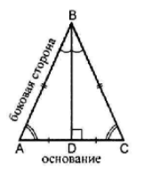
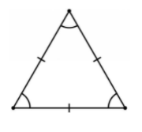
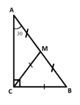
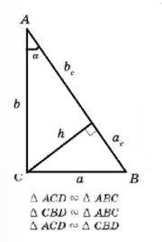

Геометрия: треугольник
Равнобедренный треугольник ( р/б ∆):
Определение:
Р/б ∆ - ∆ у которого равны 2е стороны (равные стороны – боковые; 3я
сторона – основание)

Свойства р/б ∆:
- В р/б ∆ углы при основании равны
- В р/б ∆ медиана, проведенная к основанию является высотой и биссектриссой
Признаки р/б ∆ (формулируются обратно св-вам):
- Если в ∆ 2а угла равны, значит ∆ - р/б
- Если в ∆ медиана является высотой (медиана явл. бис-сой/выс.
явл. бис-сой и т.п. – любые сочетания), то ∆ р/б.
Равносторонний треугольник (р/с ∆):
Определение:
Р/с ∆ - ∆ у которого все стороны равны.

Свойства р/с ∆:
- В р/с ∆ все углы равны
- В р/б ∆ все медианы являются высотами и бисекриссами и пересекаются
в одной точке (центре треугольника)
- В р/б ∆ центр описанной окр. Совпадает с центром вписанной окр.
Признаки р/б ∆ (формулируются обратно св-вам):
- Если в ∆ все углы равны, значит ∆ - р/с
- Если в ∆ медианы, высоты и бис-сы – совпадают и пересекаются в 1й
точке, значит ∆ - р/с
- Если в ∆ центр описанной окр. Совпадает с центром вписанной окр.,
то ∆ - р/с.
Прямоугольный треугольник (п/у ∆)
Определение:
П/у ∆ - ∆ у которого есть угол 90⁰. (гипотенуза – сторона напротив
прямого угла; стороны, образующие прямой угол – катеты)

П/у ∆ - ∆ у которого есть угол 90⁰. (гипотенуза – сторона напротив
прямого угла; стороны, образующие прямой угол – катеты)
- В п/у ∆ сумма острых углов = 90⁰
- В п/у ∆ сумма острых углов = 90⁰
- В п/у катет, лежащий напротив угла 30⁰ равен половине гипотенузы.
- В п/у ∆ гипотенуза является диаметром описанной окр.
Признаки р/б ∆ (формулируются обратно св-вам):
- Если в ∆ сумма 2х углов = 90⁰, значит ∆ - п/у.
- Если в медиана проведенная к стороне равна половине этой стороны, то ∆ - п/у.
- В п/у катет, лежащий напротив угла 30⁰ равен половине гипотенузы.
- В п/у ∆ гипотенуза является диаметром описанной окр.
Основные формулы:
